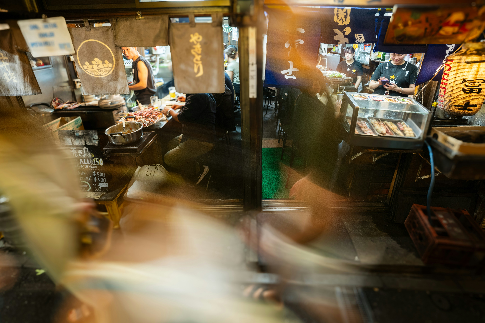
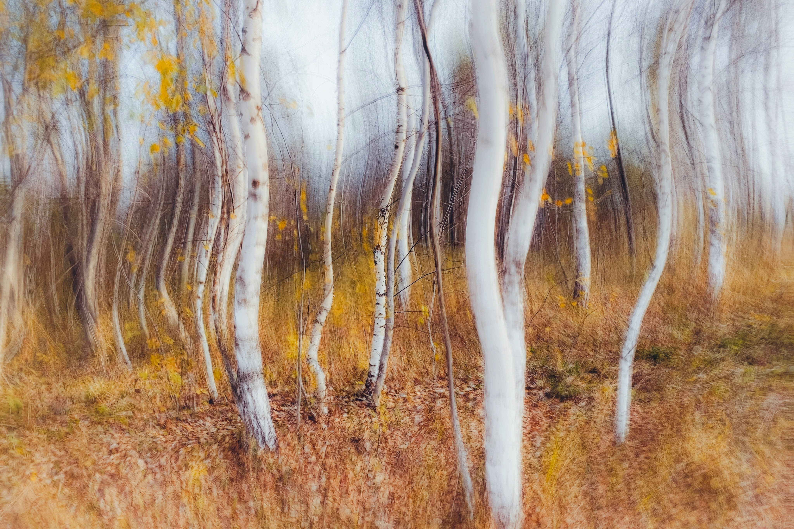

|
| Photograph of a swimming pool using a 'bull's eye'effect |
| Particles in the system are affected by the fluidization effect, allowing them to move like a liquid |
|  |
| A photograph of a market taken in motion |

|
| Photograph of a city taken at night |
| A vibrant esplanade of red vegetation stretches under a radiant yellow sky. In the center, a majestic red tree stands out, standing out strongly in this dazzling landscape |

|
| Night city photography captures a gloomy landscape, where sparse lights twinkle like stars in the gloom |
|  |
| Forest photographs capture a hypnotic effect, where trees seem to undulate as if they were dancing to the beat of an invisible breeze. |
| An orange train slices through the darkness, its vibrant hue glowing like a beacon in the night. As it speeds forward, the rhythmic clatter of wheels echoes, creating a stark contrast against the enveloping shadows |